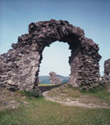
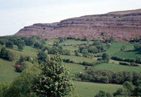
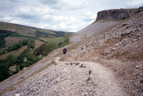
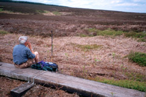

Llangollen to Llandegla
Our first goal
was the hilltop with the ruins of the 13th century Castell Dinas
Bran. This was a Welsh castle, which is different from most of
the castles in Wales, which were built by the English or Normans.
The castle itself was fun to roam around in, and the views from
there in all directions were excellent -- of farmland, of fields
with hawthorn borders, of Llangollen, and of our next stretch of
walk, the scree covered sides of Eglwyseg Mountain. We went down
from the hill and joined the "Panorama Walk", a very
scenic small road. After a mile or so, we left the road and
started across the scree slopes. Apparently this used to be a
dangerous section in bad weather, but over the years the path has
become well-worn. I think it would now be fine in almost any
weather conditions, but in any case, we had a beautiful day. The
scree was fun, and the views were superb. For the first and only
time on the trip, we unzipped our long pants legs and wore
shorts. We caught up with our teacher women,
who had also stayed in Llangollen, and had a good visit with
them. As we parted, we asked each other where we'd be staying
that night. They said they were going just 9 or 10 miles, to
Llandegla. I was surprised, thinking we were going 12 miles, also
to Llandegla. We pulled out maps, and they were right. Somewhere
I had picked up the 12 mile distance. Suddenly we had a very
short day in front of us!
After the scree section we
went down, and then up along a forestry road. Men were hauling
off recently cut trees, in enormous trucks. Then we were out on
open moor. This is another section that has been improved for
walkers. Most of the boggy parts are now covered with board
walks. While we sat on a board and ate lunch, the sun
disappeared, and we got chilly and zipped the pants legs back on.
That was the end of our wearing shorts!
 After the moor there was a big
forestry plantation. Some of the paths were pretty muddy, but the
way was easy to find. We arrived at our B&B in Llandegla in
the fairly early afternoon. Mike Byrne greeted us, as Sheila was
off shopping in Llandudno for the day. They're both school
teachers, and were enjoying their half-term holiday. Mike fixed
us tea, and we had a very enjoyable conversation, sitting in
their back garden. Later, after we showered, watched the 6:00
news, and read for a while, we set out for the Crown for dinner.
Mike suddenly appeared and very kindly offered to drive us, since
it was raining. The pub was fine, and we walked back, ending a
very enjoyable day.
After the moor there was a big
forestry plantation. Some of the paths were pretty muddy, but the
way was easy to find. We arrived at our B&B in Llandegla in
the fairly early afternoon. Mike Byrne greeted us, as Sheila was
off shopping in Llandudno for the day. They're both school
teachers, and were enjoying their half-term holiday. Mike fixed
us tea, and we had a very enjoyable conversation, sitting in
their back garden. Later, after we showered, watched the 6:00
news, and read for a while, we set out for the Crown for dinner.
Mike suddenly appeared and very kindly offered to drive us, since
it was raining. The pub was fine, and we walked back, ending a
very enjoyable day.
 After the moor there was a big
forestry plantation. Some of the paths were pretty muddy, but the
way was easy to find. We arrived at our B&B in Llandegla in
the fairly early afternoon. Mike Byrne greeted us, as Sheila was
off shopping in Llandudno for the day. They're both school
teachers, and were enjoying their half-term holiday. Mike fixed
us tea, and we had a very enjoyable conversation, sitting in
their back garden. Later, after we showered, watched the 6:00
news, and read for a while, we set out for the Crown for dinner.
Mike suddenly appeared and very kindly offered to drive us, since
it was raining. The pub was fine, and we walked back, ending a
very enjoyable day.
After the moor there was a big
forestry plantation. Some of the paths were pretty muddy, but the
way was easy to find. We arrived at our B&B in Llandegla in
the fairly early afternoon. Mike Byrne greeted us, as Sheila was
off shopping in Llandudno for the day. They're both school
teachers, and were enjoying their half-term holiday. Mike fixed
us tea, and we had a very enjoyable conversation, sitting in
their back garden. Later, after we showered, watched the 6:00
news, and read for a while, we set out for the Crown for dinner.
Mike suddenly appeared and very kindly offered to drive us, since
it was raining. The pub was fine, and we walked back, ending a
very enjoyable day.